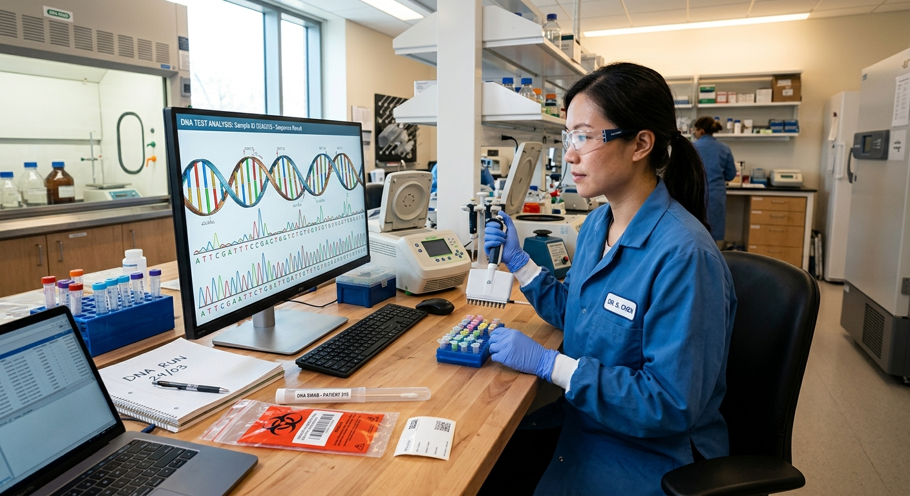

Os ácidos nucleicos (DNA e RNA) são macromoléculas essenciais formadas por nucleotídeos que atuam no armazenamento e na expressão da informação genética. O DNA guarda o código hereditário de forma permanente em dupla hélice, enquanto o RNA traduz essa informação em proteínas para o funcionamento celular..
DNA: é encontrado no núcleo das células e armazena o código genético. RNA: é encontrado em diferentes formas (mRNA, tRNA, rRNA) e participa na síntese de proteínas.
Armazenamento genético: Guardam o código hereditário que define as características de cada organismo.
Transmissão hereditária: Passam a informação genética para as próximas gerações durante a divisão celular.
Síntese de proteínas: O RNA traduz as instruções do DNA para produzir as proteínas necessárias à vida.
Controle celular: Coordenam e regulam o metabolismo e o funcionamento de todas as atividades do corpo.
Os ácidos nucleicos presentes em alimentos de origem animal e vegetal são digeridos e quebrados em nucleotídeos, que o nosso corpo reaproveita para construir novas moléculas, sem alterar o nosso próprio DNA.
Os ácidos nucleicos (DNA e RNA), encontrados em alimentos e essenciais para a hereditariedade e síntese proteica, são usados no cotidiano em testes de DNA e na nutrição celular.

Curiosidades sobre Ácidos Nucleicos!
Uma curiosidade fascinante é que, se você esticar todo o DNA contido em apenas uma das células do seu corpo, ele medirá cerca de 2 metros de comprimento! Como o núcleo de uma célula é microscópico, esse "fio" de 2 metros precisa ser extremamente compactado (enrolado em proteínas chamadas histonas) para caber lá dentro — o que equivale a colocar o equivalente a dezenas de quilômetros de linha de pipa perfeitamente organizados dentro de uma bola de futebol.
Fonte: National Human Genome Research Institute - NHGRI